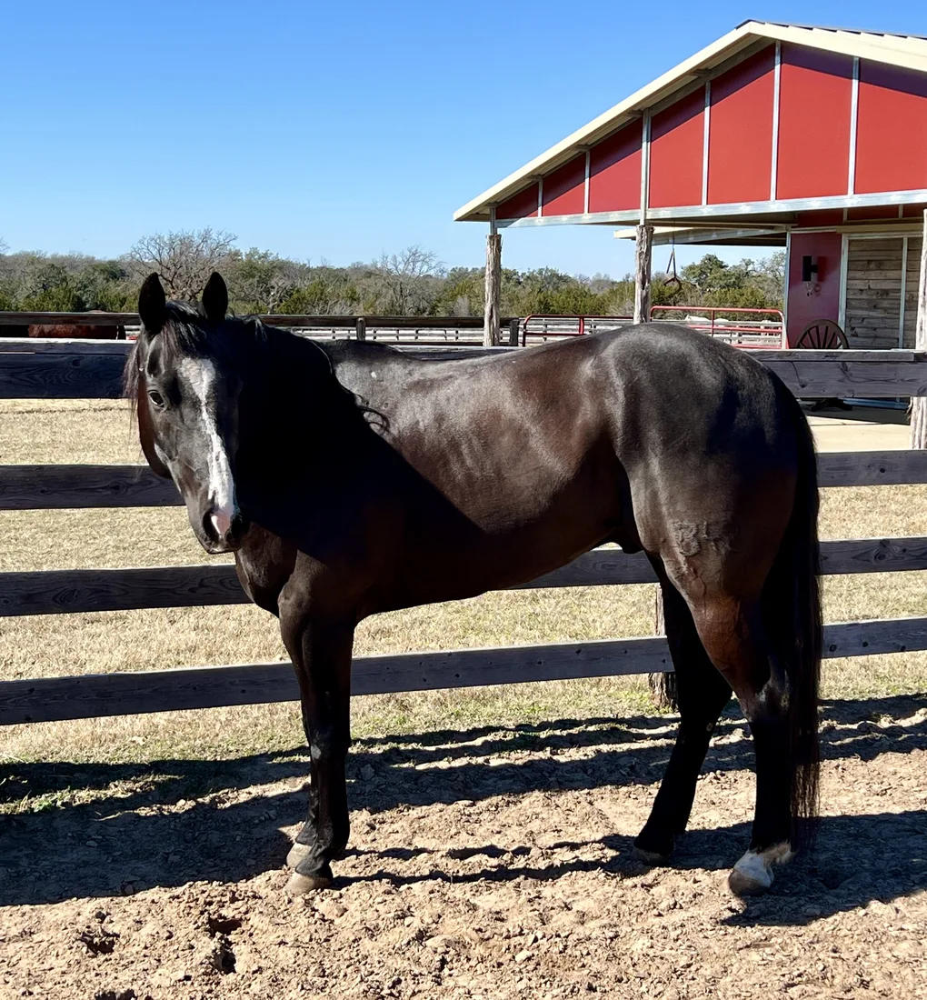
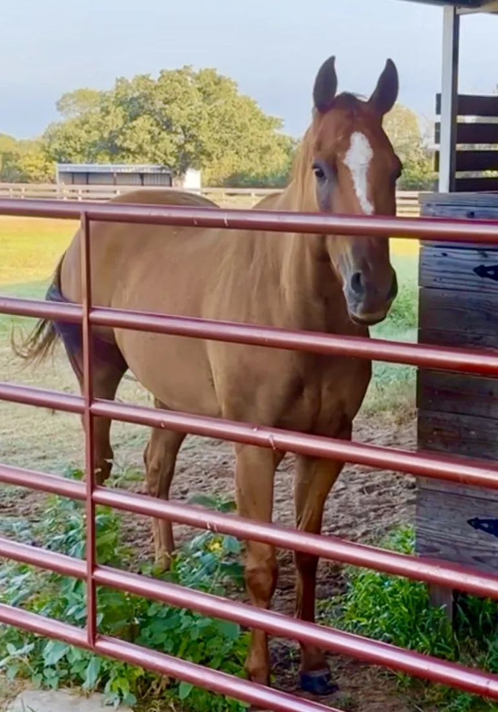
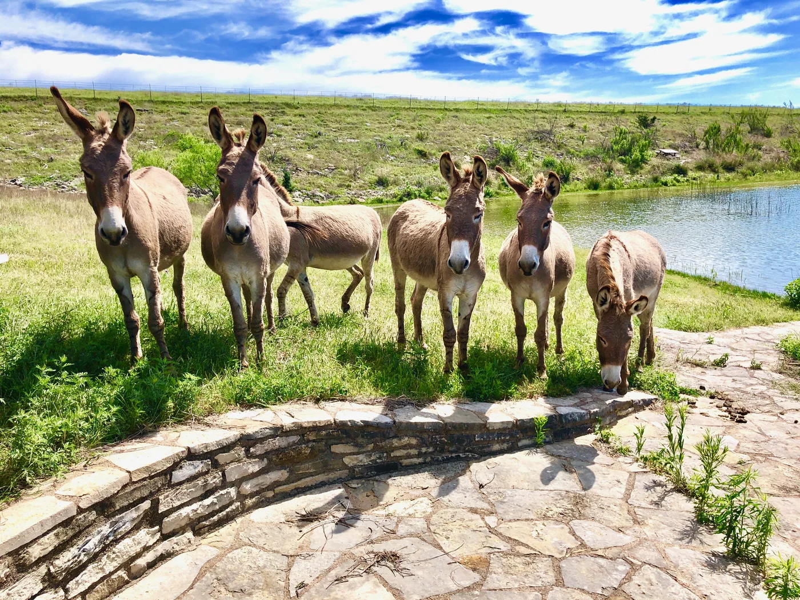

Some were rounded up wild. Some were seized from neglect, or discarded when they could no longer work. At Blue Horse Sanctuary, the story stops being about what happened to them, and starts being about home.

Our latest resident is a young, registered Quarter Horse, a well-mannered, loving boy who was surrendered to us after an accident. He caught his right rear hoof in barbed wire and tore the tendon. His vet saw no chance of full recovery and recommended he be put down.
His owner came to us first. Our horseman Kent felt it was far too soon for such a final decision, so Little Man is here, being patiently rehabilitated. Kent is a magician with injuries that seem hopeless, and we’re certain of another good outcome.
“Welcome to Blue Horse, Little Man. We love your kind, gentle spirit.”

Lightning was rounded up by the BLMThe Bureau of Land Management gathers wild horses from public rangeland and offers them for adoption to keep herd sizes sustainable. in the Pancake Range of northern Nevada in 2022, barely a year old. He was adopted through a Mustang training challenge, but when a hereditary hock disorder left him unrideable, he needed somewhere to land.
That somewhere is here, for life. Considering his first encounters with people, his temperament is amazing: curious, playful, and deeply gentle. He’s become the sweet mascot of the whole herd.

Blackie came to us in 2024 from owners who used him as a roping horse. Soon after they bought him, an old injury flared, a torn flexor tendonThe flexor tendons run down the back of a horse’s leg. A tear is painful and slow to heal, and can end a horse’s working life. with heavy scar tissue that left him unable to show.
He’s a beautiful, athletic boy who otherwise would have been euthanized. With proper management his soreness will ease, and he’ll live a long, happy life. Calm and easygoing, he already gets along with everyone. Welcome home, Blackie.
Seized by the Parker County Sheriff’s Office and rehabilitated at the county shelter, where he shared a corral with Jazzy. Malnourished and shuffled around most of his life, he’s a gentle, sweet boy who loves to be talked to and petted. Now he gets the retirement he deserves.
Severely malnourished when she was rescued, Jazzy has put her weight back on and is sound, though we’ll always watch her carefully. Affectionate despite everything she’s been through, she loves to be groomed and loved on, especially with Skipper close by.

Batman has a winning pedigree, bred to be a barrel racer. During training he developed lameness in his left shoulder and foot. Rather than push him, his owners, our own vet Dr. Eric Moore and his wife, asked that Batman be allowed to simply retire here.
What a sweet boy he is: a close talker who’ll stand quietly while you pet and love on him. As we do with every horse who comes to live here, we whispered “welcome home” in his ear. He looked back for a long, long moment. He understood.

Bred for the “Big Lick” show circuit, Smokey didn’t perform, was sold at auction, and was passed from home to home. He carries scars on his front ankles from the chains used to force that high-stepping gait, a painful practice we won’t describe in full here.
We gave him a new name to free him of his old show identity. Today he’s barefoot, socializing happily with the herd, and finally allowed to just be a horse.
On the south side of the ranch, our donkeys have their own coastal Bermuda field, and their own corner of our hearts.
We love the long history of the American donkey, brought west in great numbers during the 19th-century gold rushes as pack animals, then set loose to roam. Affectionate, courageous, protective, and genuinely intelligent, these hardy companions are due our respect and protection.
